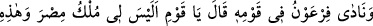
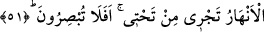

Bizde vefâ mertebelerinin ilki, iki cümlesiyle beraber kelime-i şehâdet getirmektir.
Allah Teâlâ bu sayede müslümanın can ve malını koruma altına alır. Vefânın son
mertebesi ise, bırak başkasını, kendisini bile hatırlamayacak şekilde tevhid denizine
dalış yapmaktır. Dâimî vuslat ve kurtuluş Allah’tandır.
Bazılarından şöyle rivâyet edilmiştir: Bir adam tecrîd ayağı üzere yani Allah’a tam
bir tevekkül ile hac yolculuğuna çıktı. Hiç kimseden bir şey istemeyeceğine dâir Allah’a
söz verdi ve yola koyuldu. Bir hayli ilerleyip bir müddet beklediği halde hiçbir zuhûrât
olmadı. Artık yürümekten âciz kaldı. Şöyle dedi: “Bu durum, insanı ölüme götürecek
zarûrî bir durumdur. Çünkü bu şekilde zayıf düşüp yola devam edemeyeceğim. Allah
insanın kendi canını tehlikeye atmasını yasaklamıştır.” Sonra başkalarından bir şeyler
istemeye karar verdi. Tam bu sırada içinden gelen bir düşünce onu bu kararından
caydırdı. “Hayır, böyle ölürüm fakat Allah’a verdiğim sözü bozmam” dedi. Kafile
ilerleyip gitti. Bu adam kafileden ayrılıp geride kaldı. Adam kıbleye döndü, yatıp
uzanarak beklemeye başladı. Adam böyle me’yüs ve mahzun beklerken birden yanı
başında beraberinde bazı nevaleler bulunan bir atlının durduğunu gördü. Atlı kişi adama
bir şeyler yedirip içirdi, sıkıntısı bertaraf edildi. Atlı, adama: “Kâfileye yetişmek
istiyor musun? diye sordu. Adam, “Nasıl yetişebilirim ki!.. Onlar artık çok uzaktalar”
dedi. Atlı adama “kalk bakalım” dedi. Beraberce birkaç adım yürüdüler. Sonra “tamam
dur ve burada bekle. Kafile arkadan gelecektir” dedi. Adam durup bekledi. Biraz sonra
kafilenin arkadan geldiğini gördü. İşte bu durum, Allah Teâlâ’nın huzûr ve müşâhede
ehli olan dostlarına tayy-ı mekân kabilindendir.
Sözle erbâb-ı hâl olunmaz,
Hazîneden söz etmekle varlıklı olunmaz.
51. Firavun kavmine seslendi ve şöyle dedi: «Ey kavmim! Mısır mülkü ve
altımdan akıp giden şu ırmaklar benim değil mi? Hâla görmüyor musunuz?»
“Firavun” bizzat kendisi yahut bir münâdî ile, onların toplu halde bulunduğu bir
ortamda, Mûsâ’nın duâsıyla azab bertaraf edildikten sonra ve Mûsâ’ya îman edecekleri
endişesiyle “kavmine seslendi ve” azamet ve iftiharla “şöyle dedi: «Ey kavmim,” ey
Kıptîler! “Mısır mülkü” kırka kırk fersah, köşkümün altından veya emrimle “akıp
giden şu ırmaklar benim değil mi?” Bunu “hâlâ görmüyor musunuz?”
Kâşifî şöyle demiştir: İskenderiye’den Şam sınırlarına kadar Mısır benim memleketim